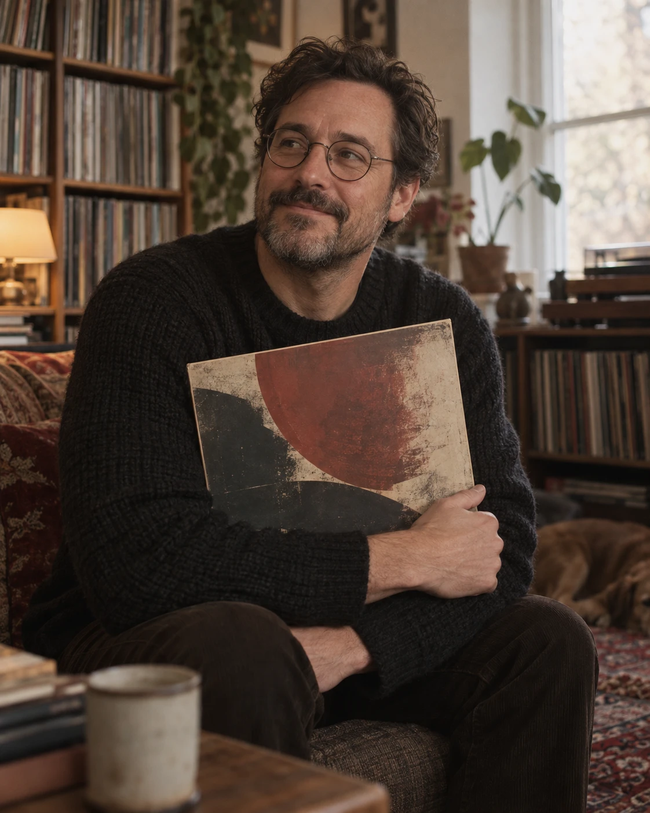
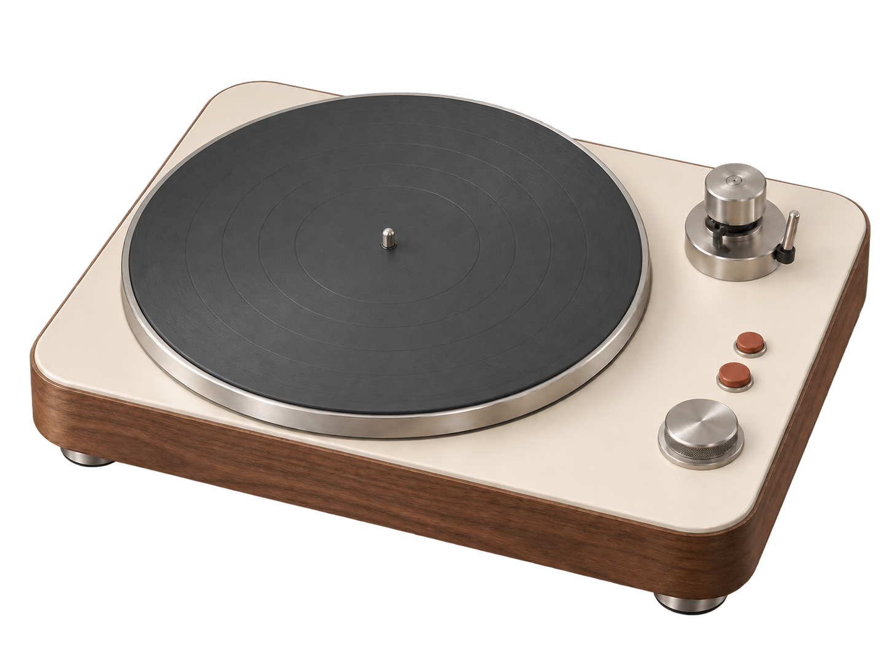
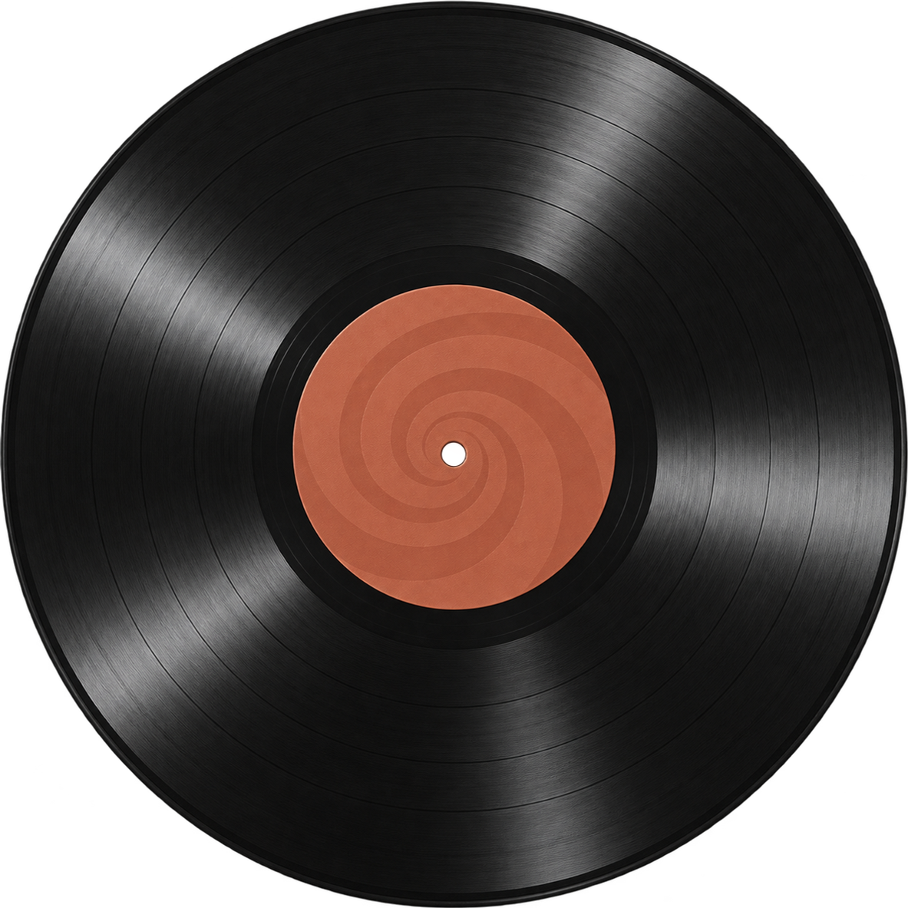
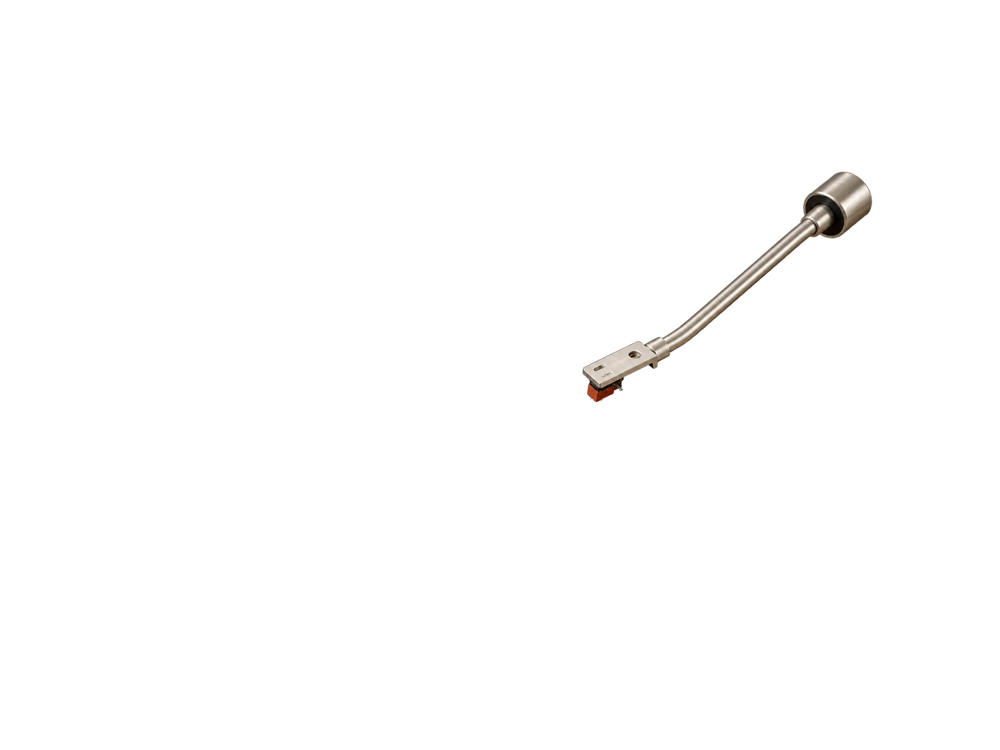
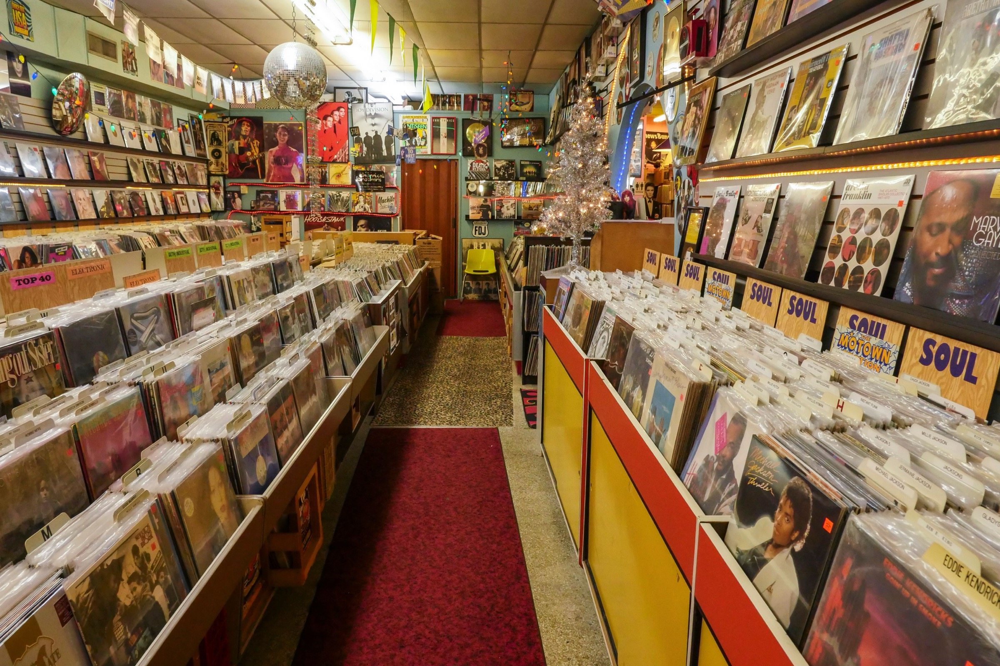
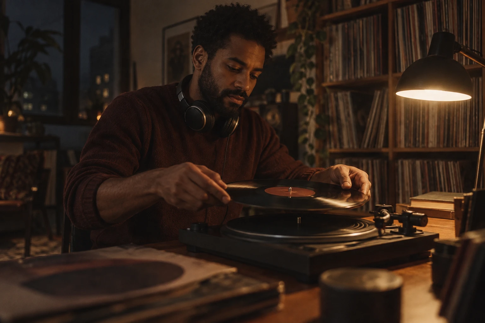

Marcus Reid
Jazz · Toronto
On his shelf
400+ records
400+ records
- Q.Why keep coming back to vinyl?
- A.It slows the evening down. I choose one record and give it my full attention.



12 genres · chosen, not stocked
155 Ossington Ave
Toronto, ON


Jazz · Toronto
Indie · Vancouver
“I came in for one record
and left with six.”
Customer since 2022.

DJ & producer · Montreal
Tonight's rotation.
▶ Still playing — the record you started up top